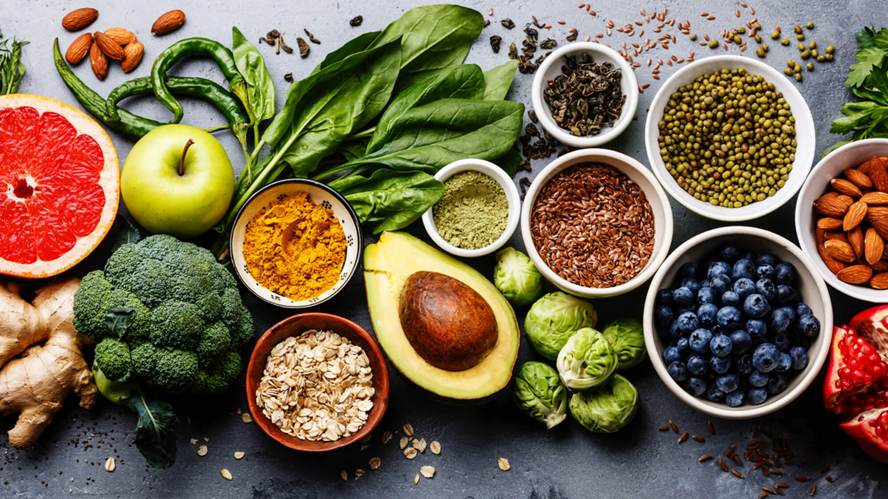

11 November,2020.
It’s Said The Basic Need Of The Individual Is Roti (Food), Kapda (Body) And Makaan (Shelter). Give A Deep Thought To This, You Will Be Amazed That Food Influences The Clothes Size That We Wear And The Kind Of Sleep That We Get Each Day!
Is It That People Who Are Not Getting Enough Food Are In The Category Of Malnourishment? And What About Obese Individuals? Hunger Once Seemed Like A Simple Problem. But Increasingly, Hunger Exists Side-By-Side With Obesity. Within The Same Community, Some People Are Overweight & Obese While Others Don't Have Enough To Eat.
The Dual Burden Of Malnutrition Is - Undernourishment And Obesity. Undernourishment Causes Stunting, Wasting, Lack Of Vitamins And Minerals; Whereas In Obesity There Is Deficiency Of Essential Vitamins And Minerals Caused Due To Poor Gut Health. And The Tricky Part: You Can't "Fix" Hunger By Just Feeding People Empty Calories. You've Got To Nourish People With Healthy, Nutrient-Dense Foods, So They Don't Become Obese.
Along With COVID 19, We Are Also At The Global Pandemic Of Obesity. One Of The Major Reasons That Today Most Of The Population Have Struck Obesity Is Due To Imbalance In The Intake Of Right Nutrients And Second Is The Way We Are Perusing Our Meal Time Rituals.
Let Me Make Food Very Simple For You By Giving Some Easy To Do Tips –
 Home
Gallery
Blogs
About Us
Contact
Sign In
Join
Home
Gallery
Blogs
About Us
Contact
Sign In
Join